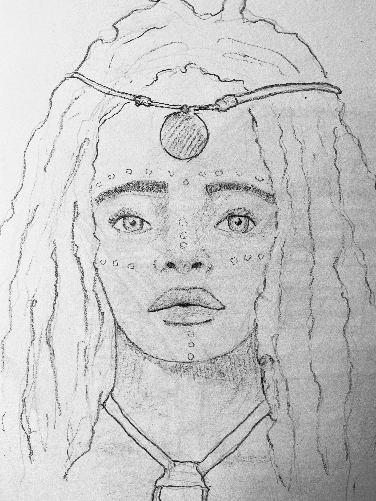
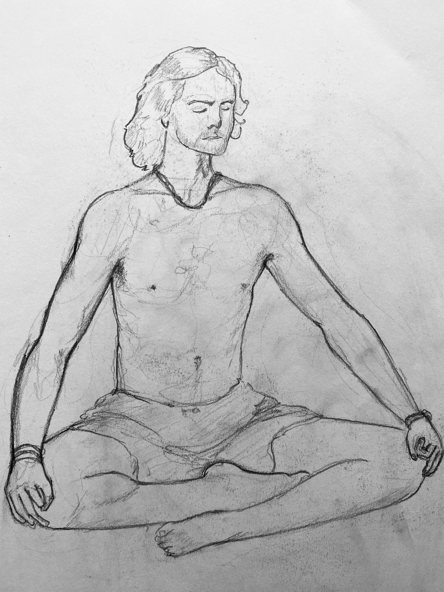
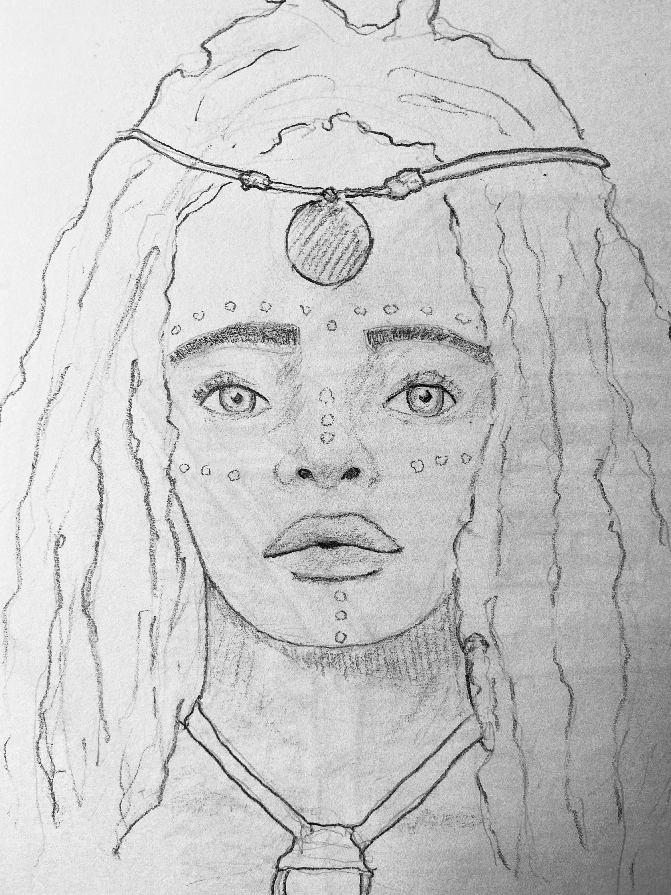
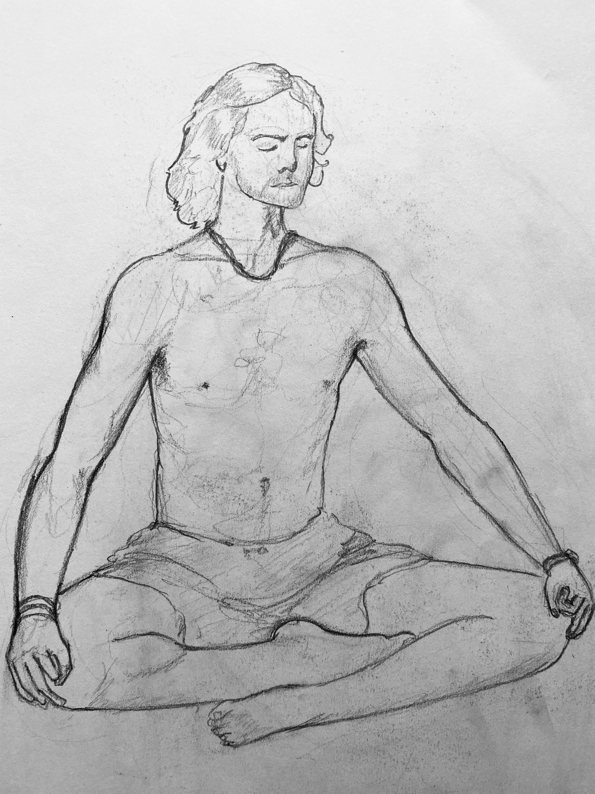
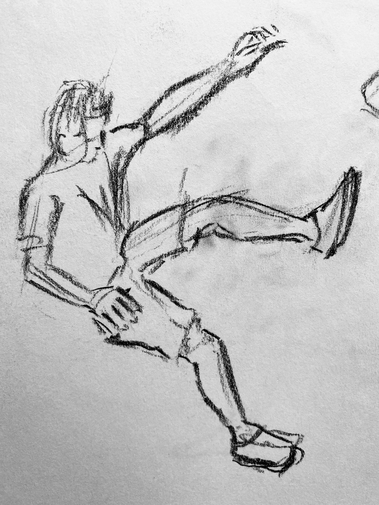
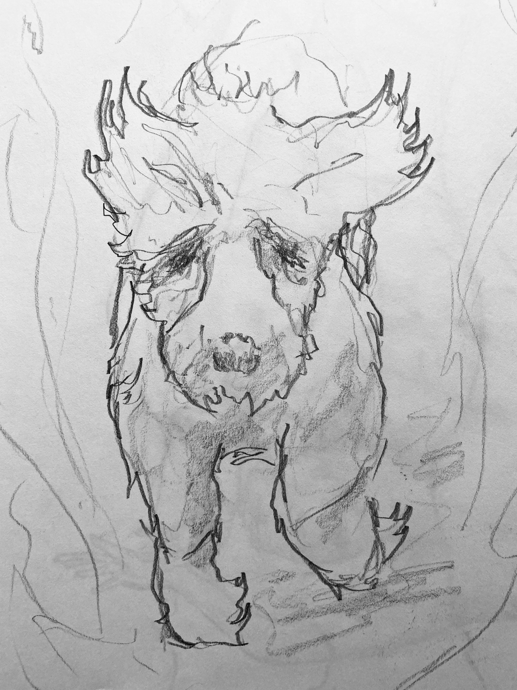
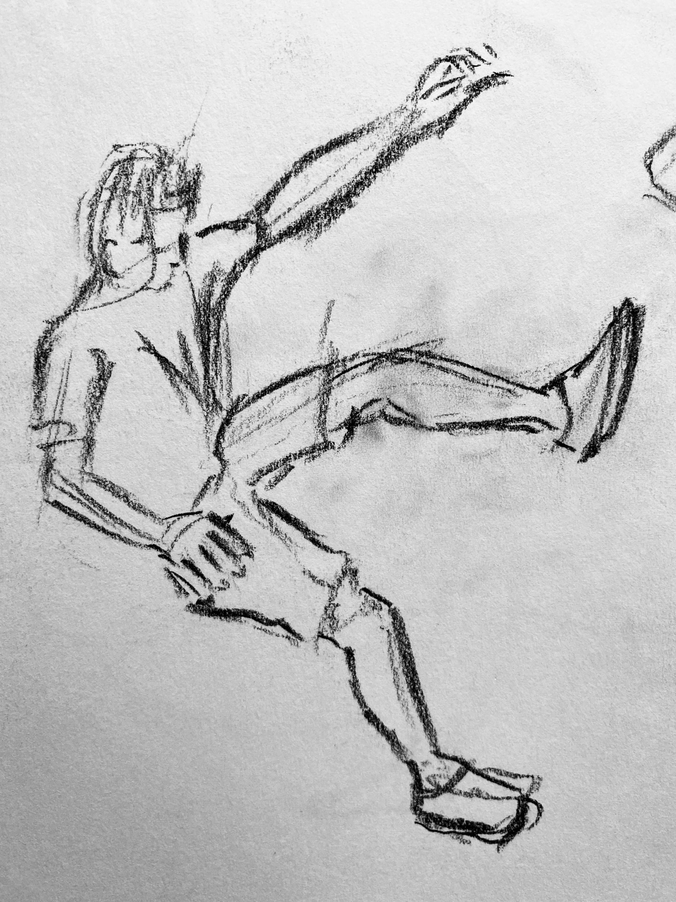
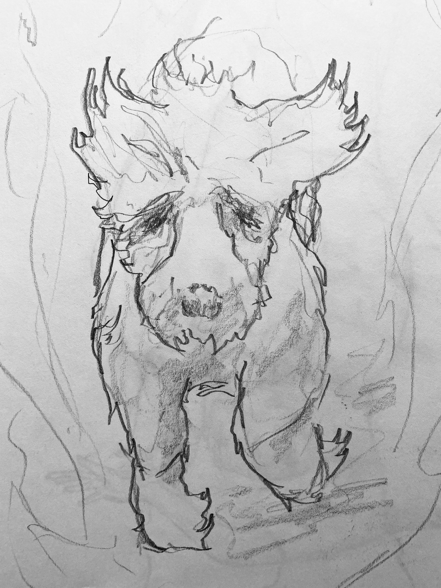

>myBackground
> Hi!, I'm Curtis Turk. Welcome to my first website.
> I’ve lived in London my whole life, until two years ago when I dropped everything, leaving a full time job as the manager of a
Harry Potter graphic design gallery to work and travel for two years across Canada.
> Now home again, I’ve returned with a new determination to actively contribute to a more sustainable world.
> I’m passionate about everything bikes, from riding to repairing and building, I have spent the last two years volunteering at various community bike shops from
Recyclistas in Victoria BC to
Santrovelo in Montreal QC and now here in Deptford at
Evelyn Wharf Cycles
> I’ve always been curious and driven to understand more about how things work: from the mechanics in bikes, to the more theoretical in language, learning and education. Now more recently to the ways of the digital space in computer logic and the words and symbols that create the technology we all use.
> During my time in Montreal, I took part in a French course for newcomers to Quebec. Being in a diverse learning community inspired me hugely; with over 18 different languages spoken and completely different backgrounds coming to the same place, wanting to communicate.
> Coding is something that I first attempted to learn when I was 14, when I tried to build an RPG in processing and now years later I have come back to with new passion and experience.
> While in Montreal, I started following online tutorials and resources and built a basic game using the P5Js library.
> Upon returning to the UK I wanted to find a community which could focus my learning and help me reach that next step.


 




 


